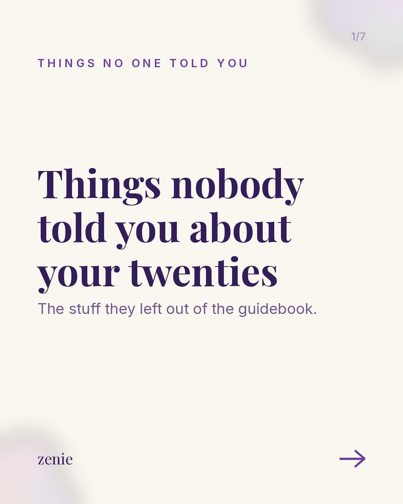
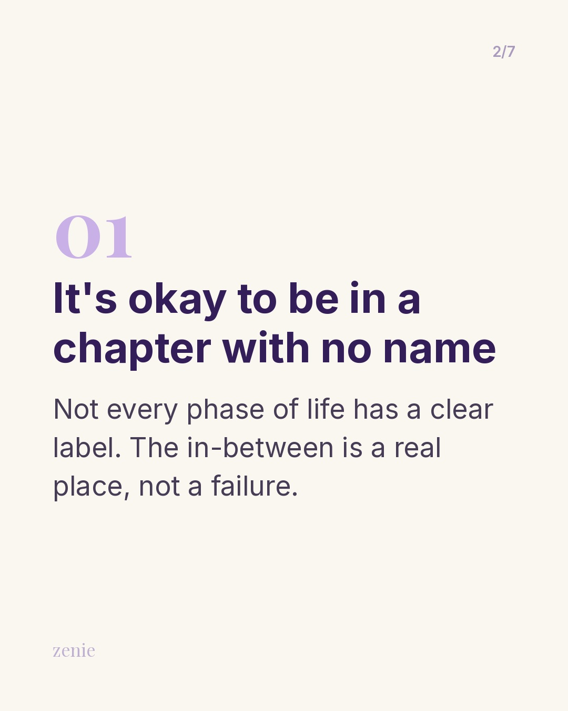
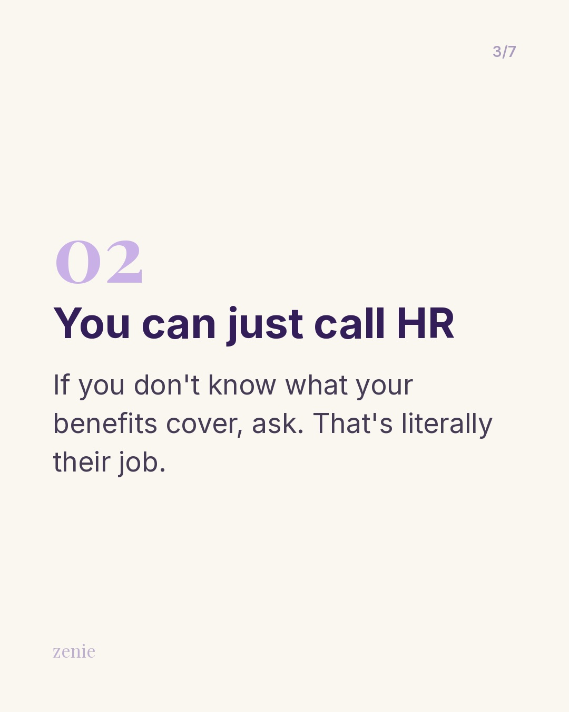
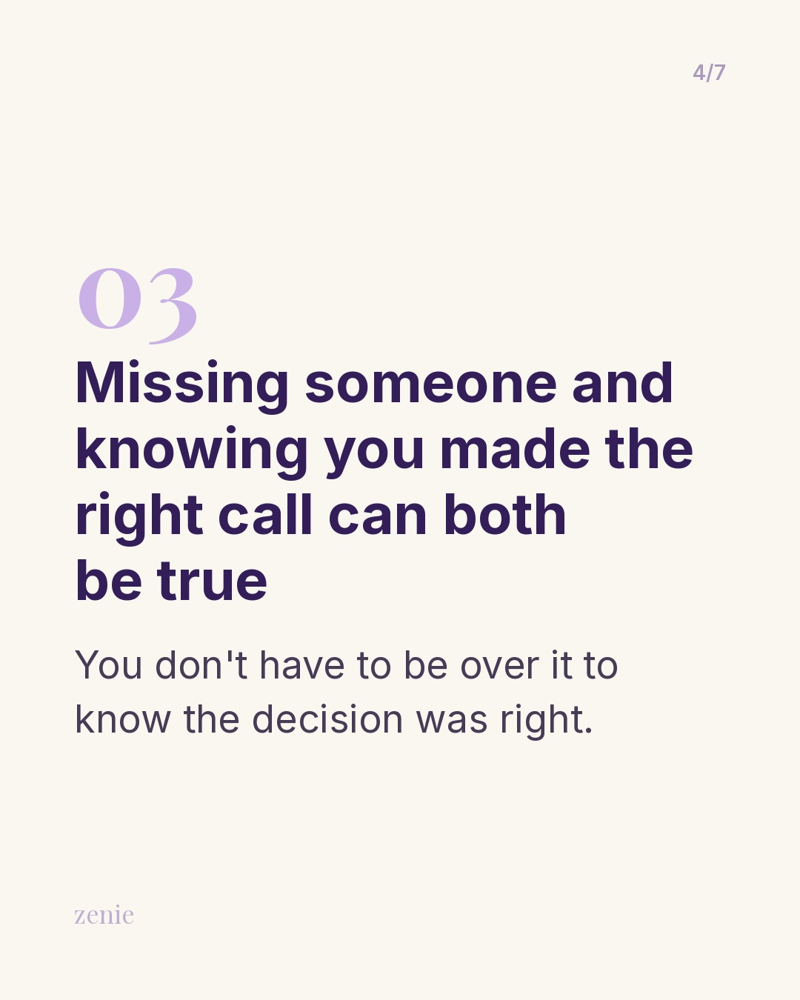
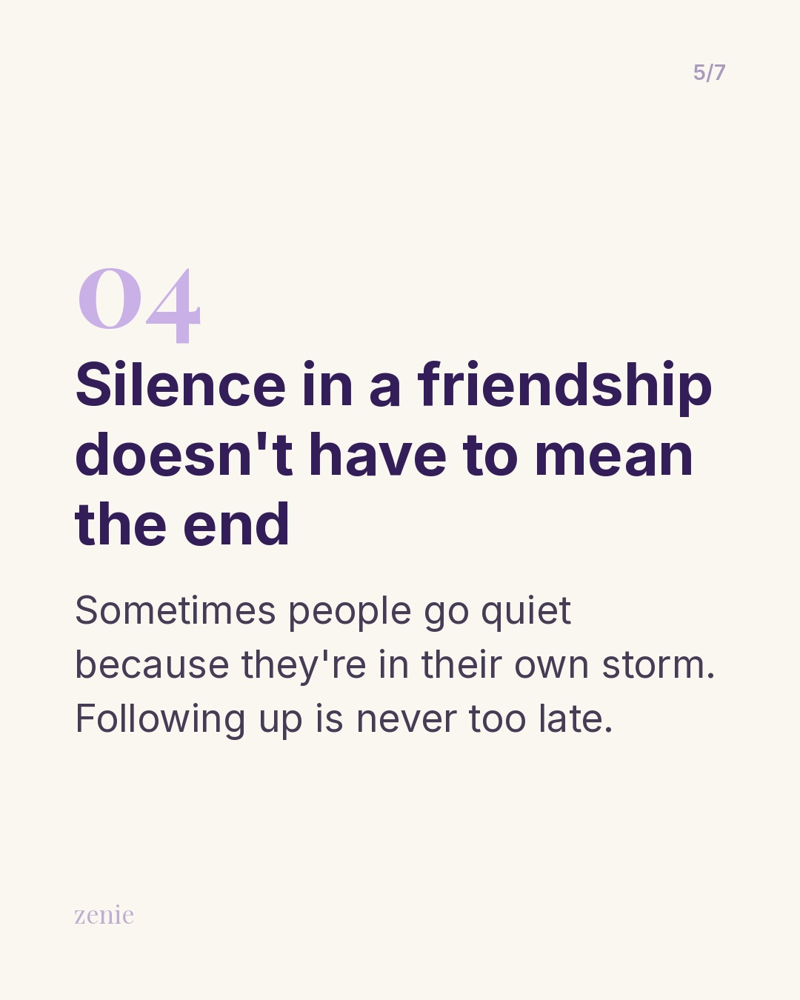
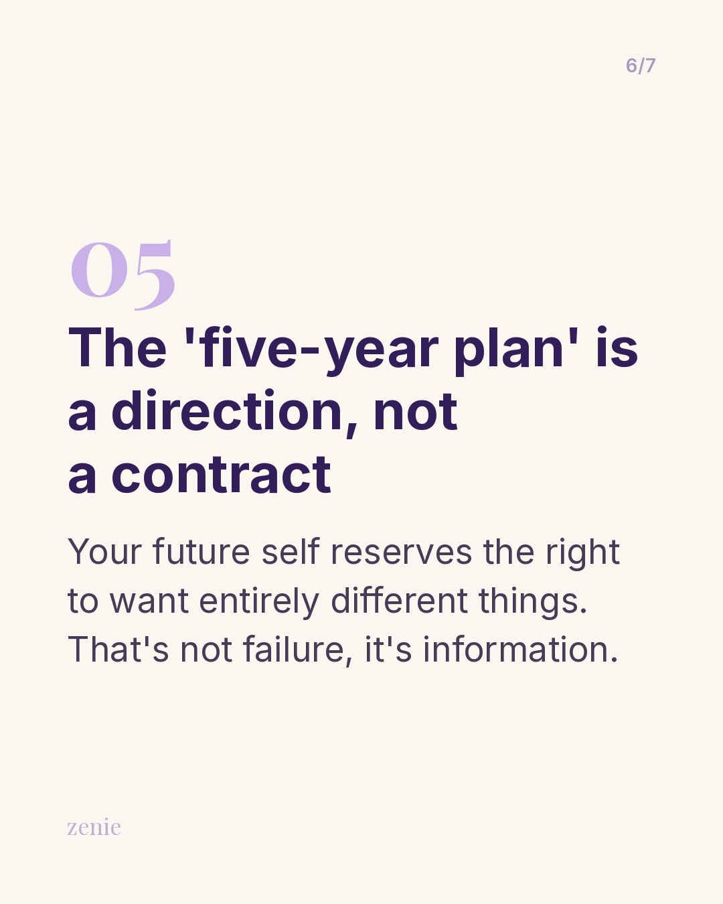
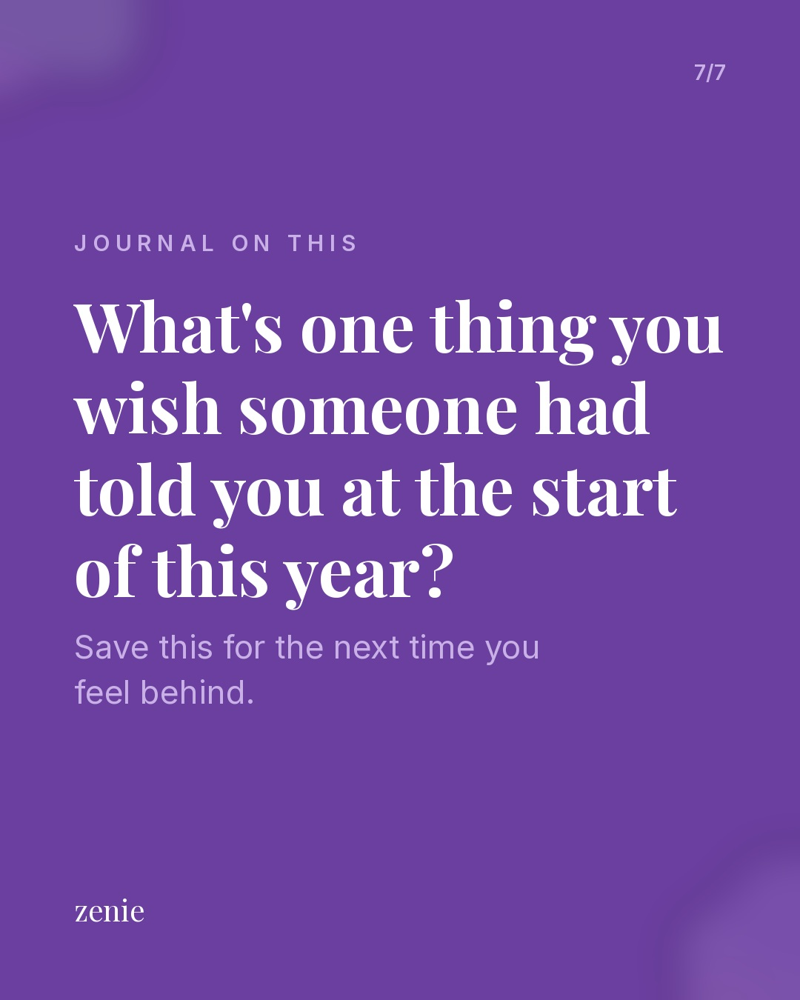

← All weeksZenie Drafts — 2026-11-09
Meme 1 Meme
IG: Truly floored. Genuinely applauding. 👏
What standards have you actually been holding yourself to vs. what you'd tell a friend to accept?
Write that one down tonight.
#situationship #journalingprompts #zenieapp #selfawareness #dating
FB: The bar is underground and apparently we're celebrating when someone clears it by an inch.
Tonight's prompt: what standards have you actually been holding yourself to vs. what you'd tell a friend to accept? Write it out — the gap is usually where the most honest journal entry lives.
Tag the friend who'd also be doing the ironic applause.
#situationship #journalingprompts #zenieapp #selfawareness #dating
Best time: Wednesday 7–9 PM PST
🎯 Pairing the sarcastic slow clap clip with a bare-minimum standards joke because the 'are you dating someone who does the bare minimum?' discourse peaked on TikTok late Oct–Nov 2026; the alignment is tight (sarcastic applause = exactly the right face for being 'impressed' by someone who did nothing), and the specific framing (texting back within 24 hours) names a real situation people recognize and send to friends.
Carousel 1 CarouselThings no one told you







Swipe sideways to see every slide.
IG: Things nobody told you about your twenties — the chapter they left out. 📓
What's one thing you wish someone had told you at the start of this year?
Save this if you've ever felt like you missed a memo.
#quarterlifecrisis #zenieapp #journalingprompts #adultingishard #selfgrowth
FB: The twenties are the decade everyone talks about but somehow nobody prepares you for. Here are six things the guidebook forgot to mention.
What's one thing you wish someone had told you at the start of this year? Drop it in the comments — we read every one.
#quarterlifecrisis #zenieapp #journalingprompts #adultingishard #selfgrowth
Best time: Tuesday 6–8 PM PST
🎯 Using the things_no_one_told_you carousel format (new format, first run this week) because list carousels earn the most engagement per person reached and mixing practical life fixes (call HR) with emotional truths (missing someone and being right can coexist) creates both a save-worthy reference and a shareable relatable item — this is a prior, not a measurement.
Reel 1 ReelQuarter-Life Check-In
No sound is baked in: add a trending audio in the Instagram app when posting.
Footage: Pexels (free to use, no credit needed).
IG: November hits different. 🍂
What's one thing that felt like a failure this year that actually just changed direction?
Write it down before December rewrites the memory.
#quarterlifecrisis #journalingprompts #zenieapp #selfreflection #twentysomething
FB: Something about November makes you stop and do the math — the job, the relationships, the plans from January that look nothing like how the year went.
What's one thing that felt like a failure this year that actually just changed direction? Give it a full page. The story isn't over yet.
#quarterlifecrisis #journalingprompts #zenieapp #selfreflection #twentysomething
Best time: Monday 7–9 PM PST
🎯 POV reel framing for the 'November math' feeling — the annual mid-month moment where you assess your whole year — because seasonal year-in-review content peaks in early November; this is the first run of the pov_reel format, so treating as a prior, but the specific framing should resonate with the QLC audience and earn Reels reach to non-followers.
Reel 2 ReelSunday Scaries
No sound is baked in: add a trending audio in the Instagram app when posting.
Footage: Pexels (free to use, no credit needed).
IG: This one for anyone redesigning the plan. 🍂
What part of your current life still feels like it was chosen by someone you used to be?
#sundayscaries #zenieapp #journalingprompts #selfgrowth #quarterlifecrisis
FB: Anna Quindlen wrote this and I haven't stopped thinking about it. The life you've built is real — and it also doesn't have to be the whole story.
What part of your current life still feels like it was chosen by someone you used to be? Give it a page tonight.
#sundayscaries #zenieapp #journalingprompts #selfgrowth #quarterlifecrisis
Best time: Sunday 6–8 PM PST
🎯 Quote Reel (new format, first run) with Anna Quindlen's line about not being locked into the life you've built — timed for mid-November's year-in-review emotional wave before Thanksgiving; IMAGE type is currently Zenie's best-performing media type (0.93% avg eng rate vs VIDEO 0.63%), and the quote_reel format tests whether moving footage boosts that further by qualifying for Reels distribution.
Text Card 1 Text Card
IG: There's fine and then there's this. 📱
What's something you've been meaning to actually say out loud instead of journaling around?
Send this to the friend who'd ask the right question.
#friendshipquotes #journaling #zenieapp #selfawareness #honesty
FB: There are several levels of 'I'm fine' and your bestie always knows which one it is.
What's something you've been meaning to actually say out loud instead of journaling around? Drop it here or save it for your pages tonight. Send this to the friend who checks in like this.
#friendshipquotes #journaling #zenieapp #selfawareness #honesty
Best time: Thursday 6–8 PM PST
🎯 Text thread between besties using the 'are you fine or fine fine' dynamic because the two-tier 'I'm fine' joke names a specific, real dynamic that drives sends (friends forwarding to other friends who'd recognize themselves), which is Instagram's strongest growth signal; first run of the send_this_text format — treating as a prior.
Repost 1 Repost
Watch the reel · credit @drjulie
IG: This one sat with me. 🌿
When have you stayed longer, tried harder, or given more because you thought effort would eventually change how someone treated you?
Write about it tonight.
Credit: @drjulie
#relationships #selfworth #zenieapp #journalingprompts #selfreflection
FB: Dr. Julie names this pattern so precisely. We learn to give more when we're treated poorly — not because it works, but because that's what we've been taught.
Tonight's prompt: when have you stayed longer, tried harder, or given more because you thought effort would eventually change how someone treated you? Write it out. It's worth the full page.
Credit: @drjulie
#relationships #selfworth #zenieapp #journalingprompts #selfreflection
Best time: Friday 12–2 PM PST
🎯 Reposting drjulie's clip on giving more when treated badly because this theme (self-worth in relationships) consistently drives shares and saves in the niche — people send it to themselves as a reminder or forward it to friends; this specific clip earned 14K likes and 192 comments on a 2.2M account.
Story 1 StoryQuarter-Life Check-In
Swipe sideways to see every frame.
Frame 1: add a poll sticker in the empty middle — options: Pretty much yes / Not even close.
Frame 2: add a question sticker in the empty middle.
Best time: Wednesday 6–8 PM PST
🎯 Story check-in asking the gap-between-plans-and-reality question because it's mid-November (the ideal moment for year-end reflection), poll and question taps keep Zenie high in existing followers' feeds, and the question-box answers will feed a potential you_told_us carousel in coming weeks.